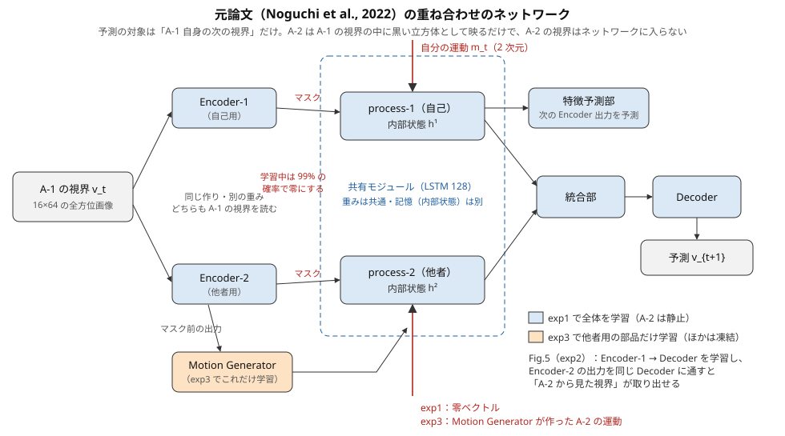
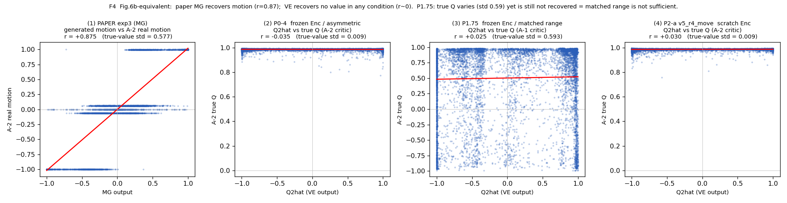
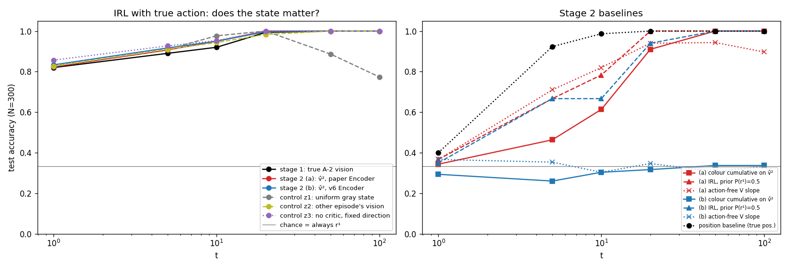
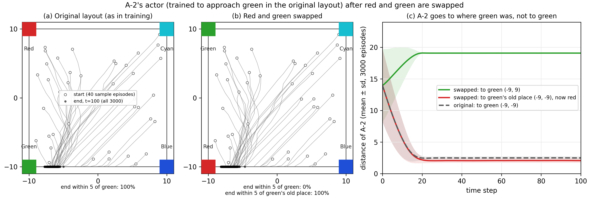
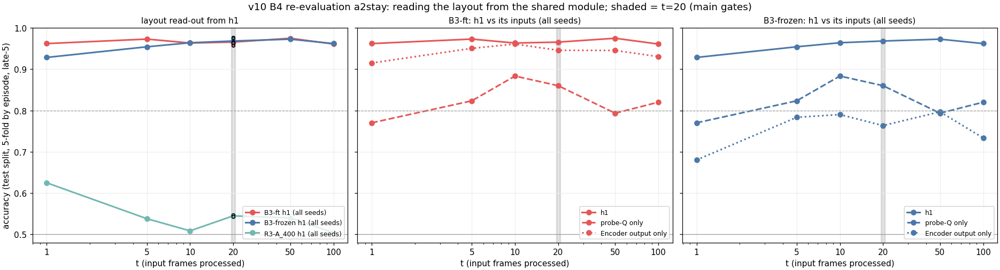
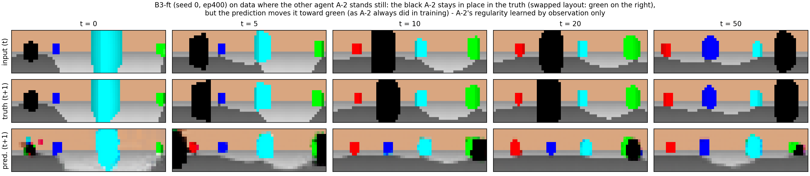

../data/result/v11/summary_figs/fig_m1d_colours.pngこのページは research_overview.md から analyze/build_research_overview_html.py で生成したもの（2026-10-22）。手で編集しないこと。
docs/research_overview.md）。docs/research_overview.html はこのファイルから analyze/build_research_overview_html.py で生成したもので、手では書いていない。my_research/preference_inference/ からの相対パス。図は本文の中に置き、一覧は「F. 図の一覧」にまとめた。v10 の後半の図（B4・再評価）は v10 の作業ツリーにだけあるので、本文に載せる 2 枚を docs/figs/ にコピーし、そこから読む（コピー元は F に記す）。自分が好みに従って動いた経験があると、他者の動きを見て、他者の好み（価値）が分かるようになるか。 最低限、他者の好みが「場所」ではなく「物（色）」に結びついて表れることを求める。
docs/v11_instructions_1_v2.md §2.1 の対応づけに従った。）
figs/research_overview_network.svg| 段 | 元論文の名前 | データ | 学習するもの |
|---|---|---|---|
| 1 段目 | exp1（mse 段 200 エポック → l1 段 200 エポック） | A-1 はランダムに歩く、A-2 は静止（1000 エピソード） | mse 段で全部、l1 段で Decoder だけ |
| Fig.5 | exp2 | 同じ | Encoder を凍結し、Encoder-1 → Decoder を学習。Encoder-2 の出力を同じ Decoder に通して「A-2 から見た視界」を取り出す |
| 2 段目 | exp3（200 エポック） | A-2 が周回する（時計回り・反時計回り・停止） | MG だけ（ほかは凍結） |
docs/results_locations.md、data/result/exp1_l1_1000/・exp3_1000/（ルート側）、data/result/fig5_v4_exp1l1000/。| 項目 | 元論文 | v4・v5 | v6 | v7 | v10 | v11 | v12 |
|---|---|---|---|---|---|---|---|
| process-1 の入力 | 運動 m_t（2） | 8 方向の probe-Q（外の critic の Q 値） | probe-Q（報酬条件付き critic） | 共有モジュールは使わない（critic で逆強化学習） | probe-Q | 方向ごとの快・不快（8）、運動なし | 運動（2、区間で隠す）＋快・不快（8、隠れた間は止める）＋隠れの印（1） |
| process-2 の入力 | exp1 零／exp3 MG の運動 | 零／VE が作る Q̂²（8） | VE′ が作る r̂² → critic → Q̂² | — | 零 | 1 段目 零／2 段目 部品 G の Q2（8） | 1 段目 零／2 段目 [運動 0、Q2、印 1]（2 段目 b・c は Q2 の形を限る） |
| Encoder | exp1 で学習 | v4 は元論文の再現を凍結、v5 は一から | 一から | 取り出した視点に v4・v6 の Encoder | B3-frozen は凍結、B3-ft は学習 | 一から | v4 の重みで凍結 |
| A-1 の動き | ランダム | ランダム | ランダム | ランダム | ランダム | ランダム／半分は赤の方へ | v11 と同じ |
| A-2 の動き | 静止／周回 | 強化学習（緑へ向かう）／静止 | 同左 | 3 つの目標の actor | 緑へ向かう（評価に静止も） | 1 段目 静止、2 段目 半分は好きな色の方へ | v11 と同じ |
| 環境 | 四隅に 4 色 | 同左 | 同左 | 同左 | 赤と緑の入れ替え（1/2） | v10 と同じ | v10 と同じ |
| 他者について問うもの | 位置・視点・運動 | 価値（Q 値） | 報酬の重み r | 目標（報酬） | （他者は対象外。価値が色か場所か） | 好み（快・不快） | 好み（快・不快） |
docs/thesis_skeleton.md §4）。docs/thesis_skeleton.md）：
../data/result/baseline_v4/F4_q2hat_vs_trueq_4panel.pngdocs/v6_summary.md）：条件付き critic は成功し、自他の Q 値の尺度の差は 70 倍から約 2.5 倍に縮んだ。正しい r を与えると、A-2 が目標から遠い場面で予測が良くなった（S4）。しかしVE′ の r̂² はほぼ一定に落ち（4 成分すべて正、最大は本来 0 の青）、本当の r に差し替えても h²→A-2 の位置は 0.471 → 0.481 とほとんど変わらなかった（S5）。docs/v7_experiment_log.md §10.1）：t=50 で目標の正答率 1.000（段階 1・2 の関門に合格）。しかし、状態を灰色にしても、別のエピソードのものにしても、critic を使わず固定の方向を使っても、正答率は変わらなかった。
../data/result/v7_irl/stage2/stage2_accuracy_vs_t.pngdocs/v10_instructions.md §0・§1、docs/v10_experiment_log.md §0）。文書も残っていない。feature/v10-color-swap ブランチの docs/v10_summary.md）：| 段 | 主の基準 | 結果 |
|---|---|---|
| 段階 A | critic の最良方向が「好きな色」と「元の場所」のどちらを向くか | 場所（元の場所との差 26.5°、赤との差 110.9°）。A-2 の actor は入れ替え後も 3000 本すべて元の場所へ行く |
| B1 | 入れ替えで学習した critic の両配置の Q の相関（本当の報酬では −1.000） | +0.996 → −0.81（A-1 seed0）。ただし関門の合格は A-1 1/6・A-2 0/6（関門は不合格、結果を見た後の判断で seed0 で進んだ） |
| 再評価（主、A-2 静止） | h¹ から配置が読めるか（t=20）。関門 1：R3-A_400 との差、関門 2：Encoder の出力だけとの差 | B3-ft 0.966 対 R3-A_400 0.545（関門 1 合格、+0.421）。Encoder だけとの差 +0.020（CI +0.002〜+0.039、関門 2 合格・僅差） |

../data/result/v10_swap/stageA/a2_terminal/fig_a2_actor_swap.png
figs/v10_b4_reeval_a2stay_layout_readout.png
figs/v10_fig_a2_learned_motion.png表 C1：v11 の 1 段目（自己）の判定（docs/v11_summary.md 表 1。組は 5 点中 3 点以上で合格、3 組中 2 組以上で合格）
| 基準 | 経験ありの値 | 組の差（経験あり − なし） | 判定 |
|---|---|---|---|
| M1(c)（予測が赤の方へ寄るか、< 0 が仮説） | −0.0085〜−0.0098 | −0.0097 | 合格（3/3） |
| M1(d)（反事実の視界への寄り、> 0 が仮説） | +0.0088〜+0.0098 | +0.0094 | 合格（3/3） |
| 色の基準（入れ替えたエピソードで S_赤 − S_緑） | +0.0059〜+0.0068 | — | 合格（3/3） |
| 入力停止の検査（見積もりが積み上がるか） | 経験ありで g > 0 が 0/3 | — | 不合格 |
| Fig.5（他者の視点の取り出し） | マージン −0.012〜+0.013（v4 は +0.091）、自他の符号の揃い 0.16〜0.30（v4 は 0.80） | — | 成り立たない |
表 C2：v11 の 2 段目（他者）の判定（同 表 3・§2.6。s1 は選び方の基準で外し、予備の組 s3 を足して 3 組）
| 主の見分け | s0 | s2 | s3 | 判定 | 経験ありの値（D6＝本当の快・不快をそのまま入れた値） |
|---|---|---|---|---|---|
| ① T2（入れ替えの瞬間に Q2 が新しい緑の範囲へ移るか） | 0/5 | 1/5 | 5/5 | 不合格（1/3） | 10 点中 9 点が負（s0・s2）。D6 は +0.60 |
| ② T5（好みだけが違う A-2 で Q2 が違うか） | 5/5 | 5/5 | 0/5 | 合格（2/3） | +0.003〜+0.045。D6 は +0.42 |
../data/result/v11/summary_figs/fig_m1d_colours.png
../data/result/v11/summary_figs/fig_fig5_transform.png
../data/result/v11/stage2/figs/fig_s2_t3.pngdocs/v12_summary.md §1）：
../data/result/v12/figs/network_v11_v12.png
../data/result/v12/trial/figs/trial_alignment_fig5.png表 C3：v12 の 1 段目の関門（docs/v12_summary.md 表 1。各組 5 点中 3 点以上で組は合格、3 組中 2 組以上で関門は合格）
| 関門 | 中身 | s0 | s1 | s2 | 判定 |
|---|---|---|---|---|---|
| G1（前提） | 運動が見える一歩で h¹→自己の位置 R² 0.80 以上 | 5/5 | 5/5 | 5/5 | 合格 |
| G2（主） | 運動が隠れた一歩の M1(c)・M1(d)・色の基準 | 5/5 | 5/5 | 5/5 | 合格 |
| G3（主） | 自分側の積み上がり（入力停止の検査で g > 0、組の差 > 0） | 5/5 | 5/5 | 5/5 | 合格 |
| G4（確認） | Encoder が v4 と一致、Fig.5 | — | — | — | 12 本とも一致、マージン +0.075 |
| G5a（主） | 他者側の積み上がり（process-2 に A-2 の本当の快・不快を入れて止めると、予測の A-2 が好きな色の方へ進むか） | 5/5 | 4/5 | 3/5 | 合格（3/3 組） |
| G5b（主） | process-2 に +a と −a を入れたとき、予測の A-2 のずれの向きが変わるか | 5/5 | 2/5 | 3/5 | 合格（2/3 組） |

../data/result/v12/main/s1eval/figs/accumulation_s1.png
../data/result/v12/main/g5/s0/g5a_curves.png表 C4：v12 の 2 段目の三つ（判定は 3 組中 2 組以上。予備の組 s3 を足すと 4 組中 3 組以上）
| 位置づけ | 事前登録 | 変えたこと | ① T2 | ② T5 | 結論 | |
|---|---|---|---|---|---|---|
| 2 段目（正式） | 1 段目の関門にすべて合格したので正式（ログ §24・§30） | あり（§28、学習の前） | — | s0 5/5、s1 0/5（逆向き）、s2 0/5 → 不合格（1/3）。s3 を足しても 1/4 | s0 0/5（逆向き）、s1 5/5、s2 0/5 → 不合格（1/3）。s3 を足しても 1/4 | 他者の好みを表す形は出なかった |
| 2 段目 b（探索） | 正式の結果を見て変えた設計。合格しても事前登録した主の結果とは書かない（§35） | あり（探索として §35、学習の前） | 部品 G の出力を「1 段目で自分が経験した快・不快の形」に限る（範囲 2〜5 は 0、範囲 0・1 と 6・7 は逆の符号） | s0 1/5、s1 0/5、s2 0/5 → 不合格（0/3） | s0 4/5、s1 1/5、s2 0/5 → 不合格（1/3） | 「残る抜け道」の形に当たる（3 組とも） |
| 2 段目 c（新しい仮説の検証） | 三層の分析から導いた新しい仮説を、事前登録して検証する探索（§46） | あり（§46、学習の前） | 2 段目の学習データで A-2 を A-1 の視界から 10〜30 ステップの区間で隠す（約 47%）。出力の形は 2 段目 b と同じ。主は隠した test で測る | 結果なし（2026-10-21 に 12 本の学習を起動した段階） | 結果なし | 未定 |

../data/result/v12/report/figs/t2t5_ckpts.png
../data/result/v12/stage2/figs/q2_vs_pa2_green_s0.pngこれは草野の解釈で、推測である。追加の計算では確かめていない。事実として確かなのは「生成した Q2 が D6（A-2 の本当の快・不快）より予測をずっと良くする（他者側の特徴予測の誤差：零 約 0.30、D6 0.25〜0.28、生成 0.13〜0.18）」ことである。
| 層 | 中身（推測） | 根拠になった事実 | 2 段目 b・c での扱い |
|---|---|---|---|
| 層 1：自由な枠の抜け道 | 部品の出力に、好み以外の情報（位置など）を流せる自由な枠がある | 正式では Q2 の分散の 71〜86% が範囲 2〜5（1 段目では常に 0）。b で形を限っても、範囲ごとの強さの自由度で別の情報を流した | b・c は出力の形でふさぐ（ただし強さの自由度は残る） |
| 層 2：好みを伝える利点が小さい | 共有モジュールが覚えた「快の高い方へ動く」見込みは弱く（G5a の動きは 1 ステップあたり 0.1〜0.2 歩）、A-2 も半分はランダムに歩くので、好みを正しく伝えても予測の改善は小さい | D6 を入れても他者側の誤差は 0.30 → 0.26〜0.28 にしか下がらない | c でも残る。ただし隠れている間は好きな色への寄りが積み上がるので、見えている場合より利点が大きい、と予想 |
| 層 3：位置が視覚から取れる | A-2 の位置はマスク前の Encoder-2 の出力から取れて、好みより予測に役立つ | 生成した Q2 から A-2 の位置が読める（T1 0.46〜0.72）。生成は D6 よりずっと予測を良くする | c で A-2 を隠してふさぐ |
docs/v12_summary.md は「作成中」で、§4（主張できること・できないこと）が空のまま。2 段目 b の 3 組の判定（ログ §47）と 2 段目 c（ログ §45・§46）は、まとめの文書にまだ入っていない。この文書ではログから書いた。| 主張 | 根拠（事実） | 版 |
|---|---|---|
| 予測学習だけで、自己位置の表現は運動以外の入力（価値、快・不快）でも成り立つ | h¹→自己の位置 R² 0.91（v4 R3-A_400）、0.82〜0.93（v11）、運動が見える一歩で 0.86〜0.94（v12 G1） | v4・v11・v12 |
| 四隅の配置と回転しないカメラの環境では、外から与えた価値・行動は「場所」に結びつく。入れ替えのある環境で critic を学ぶと「色」に沿う（不安定） | 段階 A：最良方向は元の場所（26.5°）を向く、Q の両配置の相関 +0.996。B1：−0.81（A-1 seed0、合格 1/6） | v7・v10 |
| 自分が好みに従って動いた経験から、ネットワークの予測の中に「快の高い方へ動く」見積もりが生まれ、それは色に結びつく（外から価値を与えず、予測学習だけで） | M1(c)・M1(d)・色の基準が 3 組とも合格、経験なしでは出ない | v11・v12（G2） |
| 運動を戻して隠し、隠れた間は快・不快を止めると、その見積もりが積み上がる形になる | 入力停止の検査：v11 不合格 → v12 G3 合格（3/3、経験ありの g +0.089〜+0.104） | v11 → v12 |
| 経験ありの共有モジュールは、process-2 に他者の本当の快・不快を入れると、予測の中の A-2 を好きな色の方へ動かす（他者側でも同じ仕組みが働く） | G5a 合格（3/3 組）、G5b 合格（2/3 組）。ただし組で強さがそろわない | v12 |
| 他者の価値を作る部品は、どの版でも他者の価値ではなく「予測に役立つ別の情報（主に位置）」を流す | VE：Q̂² は A-1 の位置を表す、r≈0（v4・v5）。VE′：r̂² はほぼ一定（v6）。G：Q2 は範囲 2〜5 を使い、本当の快・不快と相関しない（v11・v12）。形を限っても強さの自由度で流す（v12 b） | v4〜v6・v11・v12 |
| 他者の行動の規則性（好きな色の方へ行く）は、自分の経験なしに、観察だけで覚えられる | v10 の副産物（静止した A-2 を緑の方へ描く）。v12 の事後の分析 B（h²・Q2 から好みが少し読めるが経験の差なし） | v10・v12 |
| 運動を入力にして学習した Encoder では自他の書き方が揃い、運動以外の入力で学習すると揃わない（傾向） | 揃いのコサイン：v4 0.80、v10 B3-frozen 0.73、v5 0.25、v10 B3-ft 0.26〜0.32、v11 0.16〜0.30。揃わないモデルでは Fig.5 が成り立たない | v4・v5・v10・v11 |
| 方法論：「内部状態から他者の好みが読める」は、位置などの観測できる量と混ざらない比較があって初めて意味を持つ | Phase 3 の撤回、v7 の「行動の向き＝目標」、v10 の A-2 の位置の交絡 | 前史・v7・v10 |
| 主張できないこと | 根拠 |
|---|---|
| 他者の好みが分かった（自分の価値と行動の結びつきを他者に当てはめた） | v11：T2 不合格（逆向き）、T5 の合格は D6 の 1/10 以下で副の指標が支えない。v12 正式：T2・T5 とも不合格。v12 b：不合格。v12 c：結果なし |
| 自分の経験が他者の理解を助けた | 2 段目では経験の有無の違いがどの副の指標でもそろわない（v11・v12）。事後の分析 B でも差がそろわない |
| 他者の価値を、観察だけから生成的に推定できる | VE（v4・v5）、VE′（v6）、逆強化学習（v7：状態を使っていない）、G（v11・v12）のどれも成り立たない |
| 見積もりが「共有モジュールに」ある（v11） | 共有モジュールか Decoder か区別できなかった（v11 の入力停止の検査は不合格） |
| 自他の書き方の揃いが、価値の経験から生まれる | v12 では Encoder を凍結して与えた |
| 運動入力が揃いの原因である | 4 つのモデルの比較から見えた傾向で、入力だけを入れ替える操作はしていない |
| 2 段目の失敗の原因（v11 の揃いの喪失、v12 の三層） | どれも推測。操作して確かめていない |
| 共有モジュールが価値を自分で作った（v4〜v10） | 価値は外の critic（強化学習）が作った |
| 単一環境・手で設計した報酬や快・不快を超える一般性 | 環境は一つ、A-2 の規則も手で設計 |
以下は、ここまでの結果から見えた条件の候補である。1〜3 は v11 → v12 の変化として事実で支えがあるが、「これがあれば他者の好みが表れる」ことはまだ示せていない。4 は推測（2 段目 c の仮説）である。
修論に使う候補の図。パスは my_research/preference_inference/ から。「v10 本体」は v10 の作業ツリー（/home/kusano/superposition/my_research/preference_inference/）にだけある図。目視確認は各版の文書の記録に従った（記録がないものは「記録なし」）。本文に載せる v10 本体の図 2 枚は docs/figs/ にコピーした。
| 番号 | 版 | 図 | パス | 目視確認 | 何を示すか |
|---|---|---|---|---|---|
| B1 | 元論文 | ネットワーク図 | docs/figs/research_overview_network.svg | 済み（この文書のために作図） | 元論文の部品・入力・学習の段 |
| F-v4-1 | v4・v5 | 4 軸の位置の読み取り R² の棒グラフ | data/result/baseline_v4/F2_4axis_R2_bars.png | 記録なし | 自他の役割の分かれ方（h¹・h² → 自己・他者） |
| F-v4-2 | v4・v5 | Q̂² と本当の Q（Fig.6 に当たる図） | data/result/baseline_v4/F4_q2hat_vs_trueq_4panel.png | 記録なし | 元論文 MG r=0.875 に対し、VE はどれも r≈0（核心の図） |
| F-v4-3 | v4・v5 | 本当の Q を入れたときの予測の変化 | data/result/baseline_v4/F5_trueq2_ablation_bars.png | 記録なし | 本当の Q を入れると予測が悪くなる |
| F-v4-4 | v4・v5 | Fig.4c に当たる PCA の状態マップ | data/result/baseline_v4/fig4c_4way.png | 記録なし | v5 で h² の 2 次元の場所の地図が崩れる |
| F-v4-5 | v4・v5 | Fig.5 の再構成の並び | data/result/baseline_v4/fig5c_recon_montage_ep100.png | 記録なし | 元論文・v4・v5 の他者の視点の取り出し |
| F-v4-6 | v4・v5 | 収束の対比（運動入力 vs 価値入力） | data/result/baseline_v4/F9_convergence_contrast.png | 記録なし | 価値入力は長い停滞のあと急に収束する |
| F-v6-1 | v6 | 未知の r への汎化 | data/result/v6_baseline/unseen_r_generalization_seed2_film_norelabel_curriculum.png | 記録なし | 条件付き critic は色で評価する |
| F-v6-2 | v6 | 正解の r を与えたときの距離ごとの効果 | data/result/v6_baseline/v6_s3_base_l1_oracle_distance_binned.png | 記録なし | 遠い場面でだけ効く |
| F-v6-3 | v6 | VE′ の r̂² の成分 | data/result/v6_baseline/v6_s5_ve_r_hat_components_ep400.png | 記録なし | r̂² はほぼ一定（推定の失敗） |
| F-v7-1 | v7 | 段階 2 の正答率と対照 z1〜z3 | data/result/v7_irl/stage2/stage2_accuracy_vs_t.png | 済み | 状態を壊しても正答率が変わらない |
| F-v7-2 | v7 | 最良方向の分布 | data/result/v7_irl/stage2/stage2_best_direction_hist.png | 済み | critic の最良方向は場所によらずほぼ一定 |
| F-v7-3 | v7 | 再学習した critic の最良方向の地図 | data/result/v7_irl/retrain/compare_best_direction_maps.png | 済み | 再学習してもベクトル場にならない |
| F-v10-1 | v10 | A-2 の actor の入れ替え前後の軌跡 | data/result/v10_swap/stageA/a2_terminal/fig_a2_actor_swap.png | 済み | 元の環境で学んだ行動は場所に結びつく |
| F-v10-2 | v10 | critic の Q 値・最良方向の地図（v3 と B1 seed0） | data/result/v10_swap/b1/fig_critic_v3_vs_b1seed0_a1.png | 済み | 入れ替えで学んだ critic は色に沿う |
| F-v10-3 | v10 | 予測画像（段階 A、R3-A_400、入れ替え） | data/result/v10_swap/stageA/pred_images/r3_a_direct_1000pretrain_400_s0_ep400/pred_images_swap_rg_ep0.png | 済み | 入れ替え後も元の配色で描く |
| F-v10-4 | v10 | 予測画像（B3-ft と B3-frozen、入れ替え） | v10 本体 data/result/v10_swap/b4/pred_images/v10_b3_ft_s0_ep400/swap_rg/pred_images_swap_rg_ep1.png、.../v10_b3_frozen_s1_ep400/... | 済み | B3-ft は正しい配色 |
| F-v10-5 | v10 | 再評価（主）の配置の読み取り | docs/figs/v10_b4_reeval_a2stay_layout_readout.png（コピー元：v10 本体 data/result/v10_swap/b4_reeval/a2stay/b4_layout_readout.png） | 済み | 主関門の図 |
| F-v10-6 | v10 | B4 の配置の読み取り（交絡の例） | v10 本体 data/result/v10_swap/b4/b4_layout_readout.png | 済み | R3-A_400 でも 0.83 読める＝A-2 の位置との交絡 |
| F-v10-7 | v10 | 副産物：静止した A-2 を緑の方へ描く | docs/figs/v10_fig_a2_learned_motion.png（コピー元：v10 本体 data/result/v10_swap/b4_reeval/diag_vision/fig_a2_learned_motion.png） | 済み | 他者の規則性を観察だけで覚えた |
| F-v11-1 | v11 | 快・不快の入力の確認 | data/result/v11/gate61/gate61_pleasure_views.png | 済み | 入力の定義 |
| F-v11-2 | v11 | 1 段目の主の基準 | data/result/v11/main/gate/gate_mse_late5.png | 済み | 経験ありだけ仮説の向き、3 組とも |
| F-v11-3 | v11 | M1(d) の色ごとの寄り | data/result/v11/summary_figs/fig_m1d_colours.png | 済み | 寄りは赤に特有 |
| F-v11-4 | v11 | 入力停止の検査 | data/result/v11/main/localise/localise_ep200.png | 済み | 積み上がらない |
| F-v11-5 | v11 | 予測画像（経験あり s0、入れ替え） | data/result/v11/main/pred_images/pred_common_mixed_swap_rg_ep1_s0_e200.png | 済み | 入れ替えた配置でも色を正しく描く |
| F-v11-6 | v11 | Fig.5 の誤差の地図 | data/result/v11/main/fig5/fig5_maps_v11_fig5_mixed_s0_s0_ep100.png | 済み | 取り出した視点は A-2 の視界に近くない |
| F-v11-7 | v11 | Fig.5 の変換の前後と自他の揃い | data/result/v11/summary_figs/fig_fig5_transform.png | 済み | 揃い 0.16〜0.30（v4 0.80） |
| F-v11-8 | v11 | 2 段目の主の判定 | data/result/v11/stage2/figs/fig_s2_primary.png | 済み | T2 は逆向き、T5 は小さい正 |
| F-v11-9 | v11 | 2 段目の T3 | data/result/v11/stage2/figs/fig_s2_t3.png | 済み | 生成した Q2 は役に立つが、D6 は役に立たない |
| F-v11-10 | v11 | 範囲ごとの Q2 | data/result/v11/stage2/figs/fig_s2_q2_bins.png | 済み | Q2 は範囲 2〜5 で大きく振れる |
| F-v12-1 | v12 | ネットワーク図（v11・v12） | data/result/v12/figs/network_v11_v12.png | 済み（下書き） | 作りの違い |
| F-v12-2 | v12 | 試し学習の揃いと Fig.5 | data/result/v12/trial/figs/trial_alignment_fig5.png | 済み | Encoder を凍結する理由 |
| F-v12-3 | v12 | 1 段目の判定（隠れた／見える一歩） | data/result/v12/main/s1eval/figs/gate_s1.png | 済み | G2・G3 の判定 |
| F-v12-4 | v12 | 自己位置の追跡 | data/result/v12/main/s1eval/figs/tracking_s1.png | 済み | 隠れた区間で追跡が下がる |
| F-v12-5 | v12 | M1(d) の色ごとの寄り | data/result/v12/main/s1eval/figs/m1d_colours_s1.png | 済み | 赤に特有の寄り |
| F-v12-6 | v12 | 自分側の積み上がり（v11 との比較） | data/result/v12/main/s1eval/figs/accumulation_s1.png | 済み | 経験ありだけ赤の方へだけ進み続ける |
| F-v12-7 | v12 | G5a の曲線 | data/result/v12/main/g5/s{0,1,2}/g5a_curves.png | 済み | 他者側で A-2 が好きな色の方へ進む |
| F-v12-8 | v12 | G5b の 8 方向 | data/result/v12/main/g5/s{0,1,2}/g5b_bins.png | 済み | +a と −a でずれの向きが変わるか |
| F-v12-9 | v12 | 2 段目の T2・T5（チェックポイントごと） | data/result/v12/report/figs/t2t5_ckpts.png | 済み | 正式と 2 段目 b（s0・s2）の主の値 |
| F-v12-10 | v12 | Q2 の時系列 | data/result/v12/report/figs/q2_timeseries.png | 済み | Q2 と本当の快・不快の時間の変化 |
| F-v12-11 | v12 | T4 の分布 | data/result/v12/report/figs/t4_dist.png | 済み | 入れ替えのあと新しい緑へ向かう形はない |
| F-v12-12 | v12 | Q2 と本当の快・不快の散布図・範囲 2〜5 の分布 | data/result/v12/stage2/figs/q2_vs_pa2_green_s0.png | 済み（s0 の緑好き） | 範囲 2〜5 の Q2 は ±1 に張り付く |
| F-v12-13 | v12 | T4 の例（入れ替えの前後の予測画像） | data/result/v12/stage2/figs/t4_example_green_s0.png | 済み（s0 の緑好き） | 予測の A-2 の向き |
| — | v12 | 学習曲線（mse 段） | data/result/v12/main/convergence/curves_mse.png | 済み | 収束 |
| — | v12 | 2 段目 b・c の図 | — | まだない | 2 段目 b の 3 組の図、2 段目 c の図は作られていない |
| 文書 | 場所 | 中身 |
|---|---|---|
docs/results_locations.md（ルート） | 両方の作業ツリー | 元論文の各図の出力先（元論文の再現の対応表。再現そのもののまとめの文書はない） |
my_research/PROJECT_MAP.md | v10 の作業ツリー（git 未登録） | v4 までの全体の地図（元論文の各段の対応表を含む。v4 を「進行中」とする古い版） |
ルートの config/exp/exp1_mse.yml・exp2.yml・exp3.yml、config/model/SuperpositionNetworkFeaturePrediction/default.yml | ルート | 元論文の作り（2 つの Encoder、LSTM 128、マスク 0.99、exp1〜3 の手順）の確認 |
docs/thesis_skeleton.md | 両方 | v4・v5 のまとめ（論文骨子） |
docs/v6_summary.md | 両方 | v6 のまとめ |
docs/v7_instructions.md、docs/v7_experiment_log.md（§6・§7・§10.1） | 両方 | v7 の設計と最終のまとめ（v7 のまとめの文書はない） |
docs/v10_instructions.md（§0・§1） | 両方 | v8・v9 が構想のみであること |
docs/v10_summary.md | v10 の作業ツリーだけ（ブランチ feature/v10-color-swap） | v10 のまとめ |
docs/v11_instructions_1.md、docs/v11_instructions_1_v2.md | v11 の作業ツリー | v11 の指示書（最初の版と最新の版） |
docs/v11_summary.md | v11 の作業ツリー | v11 のまとめ |
docs/v11_experiment_log.md（見出しの全体、§7.50・§7.57・§7.58） | v11 の作業ツリー | v11 の実験ログ |
docs/v12_instructions.md | v11 の作業ツリー | v12 の指示書 |
docs/v12_summary.md | v11 の作業ツリー | v12 のまとめ（作成中） |
docs/v12_experiment_log.md（§1〜§47 の全体） | v11 の作業ツリー | v12 の実験ログ |
data/result/v12/report/index.html | v11 の作業ツリー | v12 の確認用の資料（HTML の作りの参考） |
*_summary.md がない（v4・v5 は thesis_skeleton.md、v7 はログの §10.1 が代わり。v8・v9 は文書なし）。元論文の要約の文書も docs/ にはない。まとめの文書を正として書いた。次の食い違い・抜けがあった。2026-10-22 の草野さんの判断を各項目の末尾に【判断】として記す。
docs/v12_summary.md は「作成中」で、§3 の 2 段目 b は組 s0・s2 の途中の値まで（「組 s1・s3 と案 A は学習中」）、§4 は空。ログ §47 の 3 組の判定（① 0/3、② 1/3、不合格）、ログ §45・§46 の 2 段目 c は、まとめに入っていない。この文書ではログから書いた。【判断】v12 の作業チャットで 2 段目 c の結果が出た後に v12 のまとめを完成させ、この文書もそれを待って直す。v12_summary.md §3 は組 s0・s2 の途中の値についての記述で、ログ §47 は組 s1 では符号が動く（ただし好みに沿わない）と補っている。この文書では「s0・s2 では固定、s1 では動くが好みに沿わない」と書いた。【判断】この書き方で正しい。v10_summary.md §6 の限界 8 は「凍結 Encoder は…赤・緑をほとんど区別しない」と書く。一方、v12 ログ §19・§22 は、v4 の Encoder-2 の出力から配置が線形に 0.93〜0.96 で読めるとして、v12 ログ §16 の同じ趣旨の記述を誤りと訂正している（v10 のまとめ自体の表でも、凍結 Encoder の出力から配置が 0.70〜0.84 読める）。この文書では v10 のこの限界を本文に書かず、限界の一覧にも入れなかった。【判断】v10 のまとめの限界 8 に、元の記述を残したまま訂正の注を足した（ブランチ feature/v10-color-swap）。v11_summary.md §5 の限界 15 は「2 段目は 2 組」と書くが、同じ文書の §2.6（2026-10-20 追記）とログ §7.57・§7.58 では予備の組 s3 を足した 3 組（s0・s2・s3）で判定している。この文書では 3 組と書いた。【判断】v11 のまとめの限界 15 を「3 組（予備の組 s3 を足した判定）」に直した。v12_instructions.md §1 と v12 ログ §1 は「見込みは共有モジュール（LSTM）の中で積み上がる形になっていなかった」と書くが、v11_summary.md は「共有モジュールか Decoder か区別できなかった（ネットワークが、と書く）」とする。この文書では「ネットワークの中で積み上がらない」と書いた。【判断】「ネットワークの中で」が正しい。v12 の指示書 §1 とログ §1 を「ネットワークの中で積み上がらない（共有モジュールか Decoder かは区別できない）」に直した。v12_instructions.md §3.3 は「経験の効果は共有モジュール・統合部・Decoder（と特徴予測部）」に改訂済みで、ログ §15 と一致している（改訂前の版との違いのみ。食い違いではない）。v12_summary.md §6 の一覧にまだない。この文書の F は、ログ §32・§42 で目視済みと記録された図で補った。【判断】この形でよい。docs/v10_summary.md は v10 のブランチ（本体の作業ツリー）にだけあり、v11 のブランチにはない。v10 の後半の図（B4・再評価）も本体の作業ツリーにだけある（本文に載せる 2 枚は docs/figs/ にコピーした）。thesis_skeleton.md・v6_summary.md には図の目視確認の記録がない（F では「記録なし」とした）。【判断】この形でよい。docs/results_locations.md、PROJECT_MAP.md §1、thesis_skeleton.md と、ルートの設定から把握した。